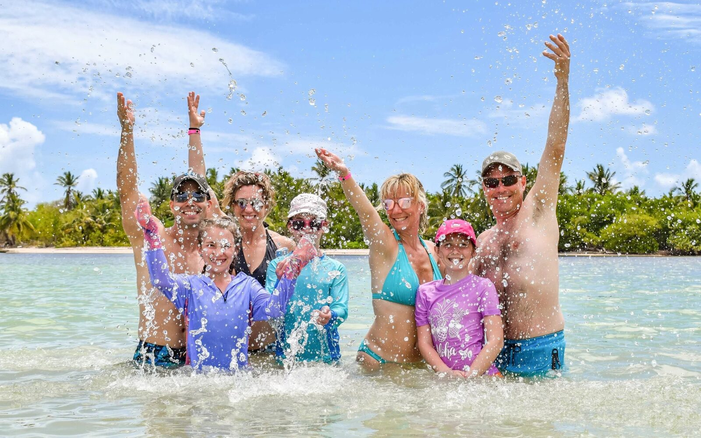
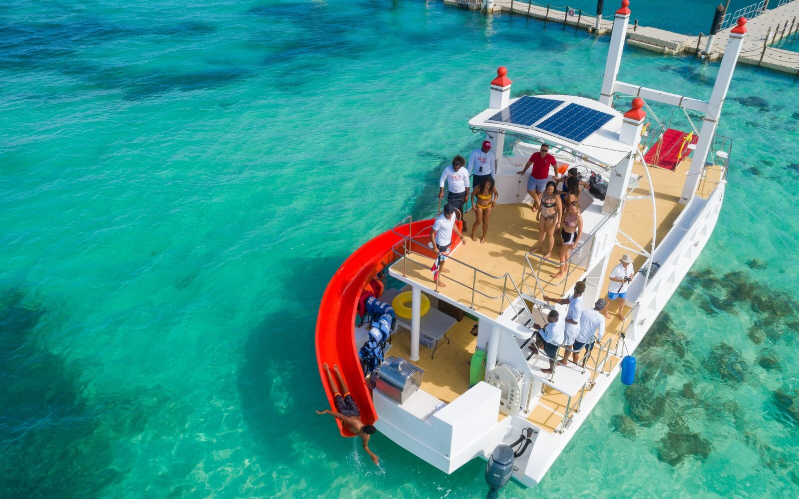
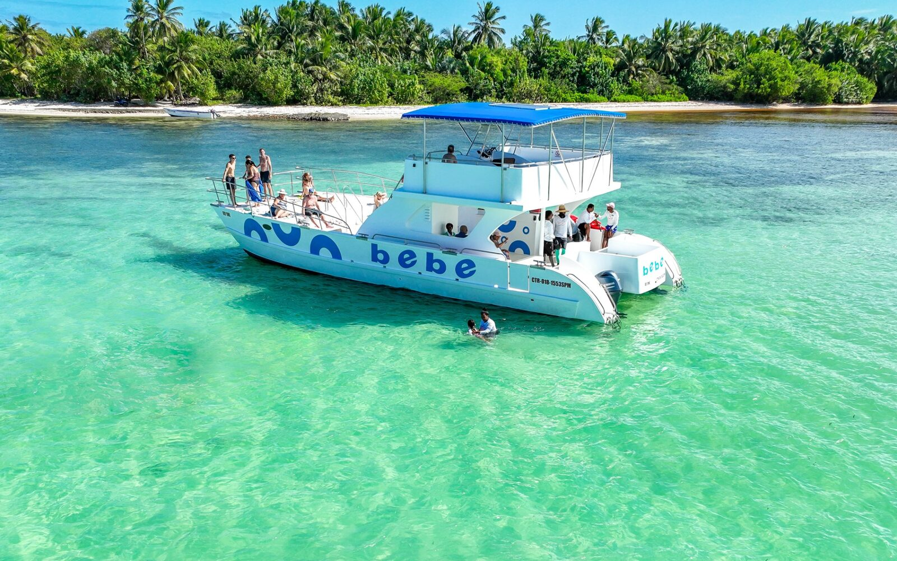
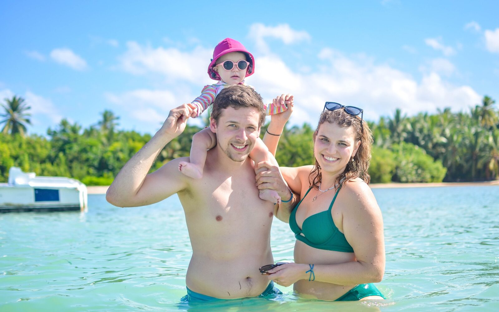

Snorkel en catamarán en Punta Cana
Snorkel en el arrecife y luego una piscina natural turquesa. Open bar a bordo.
- 3 horas · 12 PM familiar · 3 PM solo adultos
- Recogida en el hotel incluida
- Cancelación gratis hasta 24 h
Sales desde la playa Bibijagua, en Bávaro, en un catamarán con música y open bar. Primera parada: un arrecife donde la tripulación mete a todos al agua con equipo de snorkel, también a quienes nunca lo han hecho. Segunda parada: una piscina natural con agua turquesa a la cintura. Luego vuelves a la playa y a tu hotel.
Qué incluye
- Recogida y regreso al hotel
- Equipo de snorkel
- Open bar: cerveza, ron, refrescos y agua
- Frutas tropicales y snacks
- Tripulación bilingüe
No incluye
- Propinas a la tripulación
- Toallas
- Paquete de fotos
Qué llevar
- Traje de baño
- Toalla
- Protector solar biodegradable
Bueno saber
- Barco de las 12:00 PM: para toda la familia. Barco de las 3:00 PM: solo adultos (18+).
- Niños de 2 a 12 pagan la mitad; menores de 2, gratis.
Así es el día
- RecogidaEn tu hotel (hora en la tabla de abajo)
- SalidaEmbarque en la playa Bibijagua: empiezan el open bar y la música
- Parada 1Snorkel en el arrecife, con equipo incluido
- Parada 2Piscina natural con agua a la cintura
- RegresoVuelta a Bibijagua y traslado a tu hotel
Unas 3 horas en el mar.
Hora de recogida por hotel
Escribe tu hotel en la reserva y verás tu hora exacta. Si tu hotel no está en la lista, te confirmamos la hora por WhatsApp.
Ver la hora de cada hotel
| Zona | Hotel | Barco 12 PM | Barco 3 PM |
|---|---|---|---|
| Uvero Alto | Sivory, Zoetry, Rancho Caribeno, Excellence Punta Cana | 10:20 AM | 1:20 PM |
| Uvero Alto | Playa Palmera, Sirenis, Excellence El Carmen, Breathless | 10:30 AM | 1:30 PM |
| Uvero Alto | Now Onix, Live Aqua, Wyndham Alltra | 10:40 AM | 1:40 PM |
| Uvero Alto | Nickelodeon, Chic Royalton, Ocean El Faro | 10:45 AM | 1:45 PM |
| Uvero Alto | Dreams Macao | 11:00 AM | 2:00 PM |
| Bávaro north | Hard Rock | 10:15 AM | 1:15 PM |
| Bávaro north | Riu Republica, Occ.Caribe, Royalton Punta Cana | 10:25 AM | 1:25 PM |
| Bávaro north | Royalton Bavaro, Splash, Majestic | 10:30 AM | 1:30 PM |
| Bávaro north | Bahia | 10:40 AM | 1:40 PM |
| Bávaro north | Riu | 10:55 AM | 1:55 PM |
| Bávaro north | Iberostar | 11:15 AM | 2:15 PM |
| Bávaro north | Whala Urban | 11:10 AM | 2:10 PM |
| Bávaro 1 | Punta Cana Princess, Vik Arena | 10:35 AM | 1:35 PM |
| Bávaro 1 | Ocean Blue | 10:40 AM | 1:40 PM |
| Bávaro 1 | Caribe, Paradisus Punta Cana | 10:50 AM | 1:50 PM |
| Bávaro 1 | Bavaro Princess | 10:55 AM | 1:55 PM |
| Bávaro 1 | Occidental Punta Cana | 11:00 AM | 2:00 PM |
| Bávaro 1 | Palladium | 11:10 AM | 2:10 PM |
| Bávaro 2 | Presidencial, Vista Sol, Impressive | 11:20 AM | 2:20 PM |
| Bávaro 2 | BAM, Walla Bavaro | 11:25 AM | 2:25 PM |
| Bávaro 2 | Dreams Royal Beach, Secret Royal Beach | 11:30 AM | 2:30 PM |
| Bávaro 2 | Circle, Melia, Palma Real | 11:35 AM | 2:35 PM |
| Bávaro 2 | Lopesan, Barcelo Beach | 11:40 AM | 2:40 PM |
| Bávaro 2 | Barcelo Palace | 11:35 AM | 2:35 PM |
| Cabeza de Toro | Dreams Flora, Jewell Palm, Be Live | 11:00 AM | 2:00 PM |
| Cabeza de Toro | Radison, Serenade, Catalonia | 11:10 AM | 2:10 PM |
| Cap Cana | Sanctuary, Secrets, TRS, Marina, Hyatt, Margaritaville, Sport Illustrated | 10:30 AM | 1:30 PM |
| Punta Cana | Westin, Tortuga Bay, Areciffe, Club Med | 10:45 AM | 1:45 PM |
Fotos




Preguntas y políticas
Guías: precio y horarios · excursiones con niños: precio de cada tour
¿Pueden ir niños?
Sí, en el barco familiar de las 12:00 PM. El barco de las 3:00 PM es solo para adultos (18+). Niños de 2 a 12 pagan $37.50; menores de 2, gratis.
No estoy en un hotel. ¿Me pueden recoger?
Sí. Si estás en un Airbnb o una villa, te recogemos en la entrada o lobby del hotel más cercano de nuestra ruta, o nos encuentras en nuestro punto de encuentro. Lo acordamos contigo antes del tour.
¿Cómo pago? ¿Es seguro?
Con tarjeta, en una página de pago segura de Stripe. Stripe te envía el recibo al instante y el ticket te llega por correo enseguida. No cobramos en efectivo en la recogida.
¿Puedo cancelar o cambiar la fecha?
Cancela hasta 24 horas antes con reembolso completo. También puedes cambiar la fecha una vez, gratis, hasta 24 horas antes. Con menos de 24 horas no hay reembolso.
¿Y si llueve?
La lluvia suave no detiene el tour. Si el puerto cierra por seguridad y el tour se cancela de nuestro lado, eliges otra fecha o el reembolso completo.